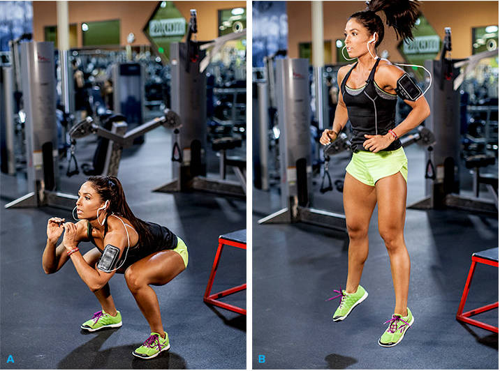

Why Squatting Is Better Than Running
Squatting and Running are common physical activities which keep you live and active, all day round. And as a part of your daily fitness regime, you probably prefer running to squatting; rather, have been through a system where you run more, and squat less. However, while running those extra miles with the hope of losing weight or improving your existing health conditions; did you realize the effectiveness of doing just 50 to 65 squats a day? Well, here’s how squatting can actually improve your physical condition, and enhance your quality of health and fitness.
1. Squatting does not take much of your time and commitment
When you run, it’s all about stamina and speed. You set your goals, achieve it, and further increase your distance targets. Thus, you continue running more and easily cover long miles. This however costs you more time and demand constant dedication. With squatting, you only give 10 minutes of your precious time, and there isn’t much to commit. Therefore, it’s more favorable, than running long distances.
2. Building strong muscles in the body, happens automatically
Besides helping you to strengthen your calf muscles including quadriceps, calves and hamstrings; a daily dose of 50 to 60 squats also enables your body to create an anabolic environment, which further helps to develop muscles in the entire body. Compared to running, squats are more powerful in activating testosterone- a hormone responsible for stimulating secondary sexual characteristics in male; and somatotropin- the human growth hormone (GH). By stimulating your GH, you grow your muscles, and enhance your muscular mass in all areas of body, except your legs. Thus, doing regular squats bring more strength to your upper and lower body.
3. You save your knees in the long run
As you run, you put lot of force on your knees. To give some you facts, by default we humans have been built to run shoeless, that too on soft soil. And given the situation that we reside in the world of concrete and marble; running on the hard surfaces takes a hard toll on the connective tissues. Today, even the parks and jogging tracks are cemented surfaces. Therefore, unless you perform squatting using some heavy weight, replacing one or two squat sessions, is a way-better option than running, and it also preserves your knees, in the future.
4. Squatting makes you slimmer than running
If you are relying on the concept that running can actually lose that extra flab, well you are absolutely wrong. Squatting has a dual benefit- it reduces your calorie, and allows you to gain more muscles. And for every additional pound that gets into your body, you lose another 50 to 70 calories, per day. Thus, 10 pounds of muscular development with automatically reduce 500 to 700 calories, on a daily basis. Now you know that squatting can give you a good physique, and make you muscular, at the same time.
5. You Improve Balance and Mobility
Squats makes your legs stronger. As you age, leg strength becomes an important factor for maintaining high mobility. With squats, you work on your principal stabilizing muscles, which enhance physical balance within your body, and also influence communication between your brain and the groups of muscles. As a result, you hardly develop any chance for falling and thereby prevent bone fractures. You also stay away from consuming those extra calcium supplements for your bones.
6. Backsides, Abs & Entire Body get in shape
Regular squatting sessions tone and tighten your backs, abs and obviously your legs. Your entire body gets into a fine tone, and proper shape. Besides these, squats also develop muscles which play a vital role in regulating glucose, metabolizing lipid, and controlling the sensitivity of your insulin. By this, you protect yourself from age-related concerns like high pressure, sugar, diabetes, cholesterol, obesity and cardiovascular diseases.
7. Squatting, and not running makes your waists thinner
The extra muscle that you develop near your backsides, adds more muscles to your backs. And more muscular are your backs, thinner are your waists. This, however, doesn’t happen with running. Doing squat sessions can fulfill a woman’s dream of having an hourglass figure, and a man’s desire to have muscular backs.
With this, you now know why you should invest more time in performing squats, than running, and how it is helpful for your lifetime. Hence, without wasting any further time, change your daily exercise routine and enjoy your squat sessions.